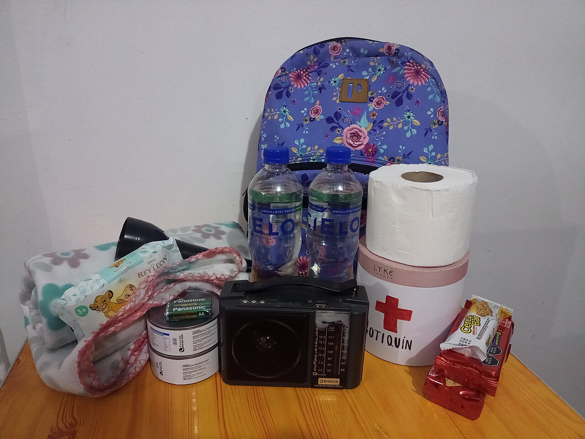

Defensa Civil de Brasil aclara que el kit de emergencia no implica una alerta nacional
Tras la repercusión en redes, las autoridades reiteran que contar con suministros para 72 horas es una medida preventiva, no un anuncio de desabastecimiento.

Qué pasó
El 8 de noviembre de 2026, la Defensa Civil Nacional de Brasil volvió a aclarar que la recomendación de preparar un kit doméstico de emergencia no constituye una alerta nacional por desastre ni una previsión de interrupción generalizada de los servicios o el abastecimiento. Agência Brasil informó sobre la aclaración a las 17:26 del 8 de noviembre, tras la reacción en redes sociales a publicaciones anteriores. El Ministerio de Integración y Desarrollo Regional había emitido una nota oficial el 7 de noviembre a las 20:55, explicando que se trata de una recomendación habitual de autoprotección, difundida también en marzo y abril. Entre los suministros sugeridos figuran agua potable, alimentos no perecederos, medicamentos habituales y material de primeros auxilios para cubrir necesidades básicas durante hasta 72 horas. El ministerio también vigila las tormentas en el sur de Brasil, pero subraya que eso no convierte la recomendación general en una declaración de emergencia nacional.
Análisis del Cuervo
Preparar un kit doméstico ayuda a reducir riesgos cuando las tormentas interrumpen el suministro de electricidad, agua o transporte. La confusión aparece cuando una recomendación habitual circula sin contexto y se interpreta como señal de un desastre inminente. La comunicación pública debe distinguir entre prevención general, pronósticos meteorológicos y alertas específicas para cada localidad. Conviene consultar los canales oficiales de Defensa Civil estatales y municipales y verificar la fecha y el alcance geográfico de cada aviso antes de compartirlo.
Contrapunto
La preocupación por los fenómenos meteorológicos extremos es comprensible. Sin embargo, la aclaración oficial no anula las alertas regionales para zonas en riesgo, donde deben seguirse las instrucciones locales. Las fuentes consultadas tampoco respaldan la afirmación de que el gobierno anticipe un colapso nacional del abastecimiento.